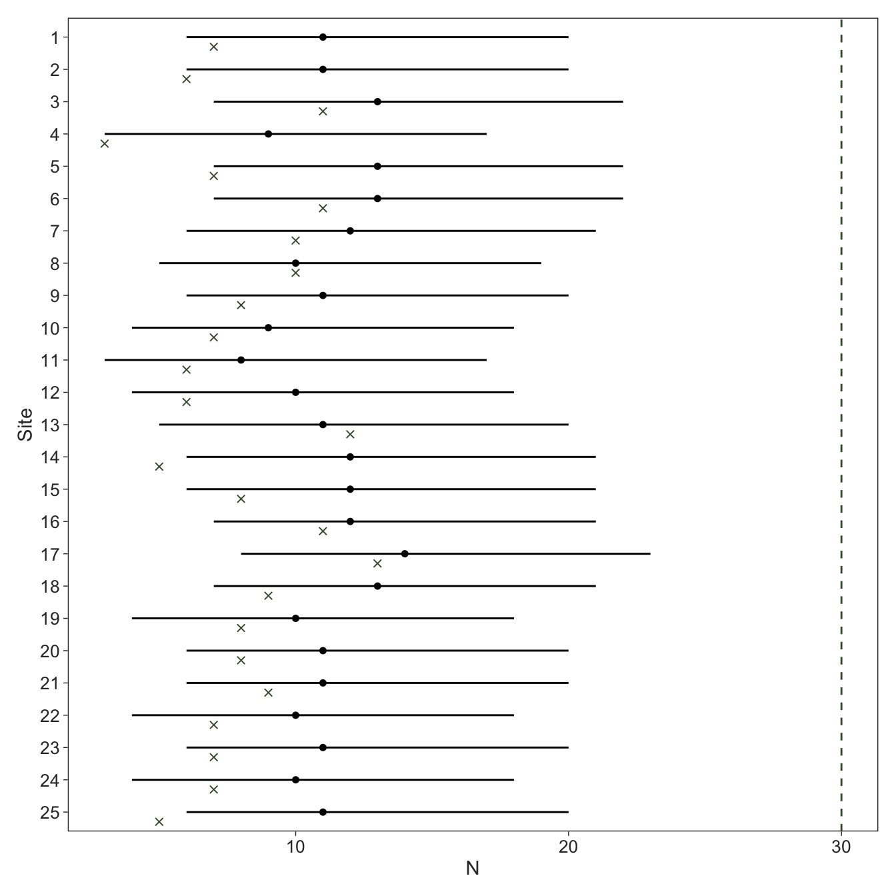
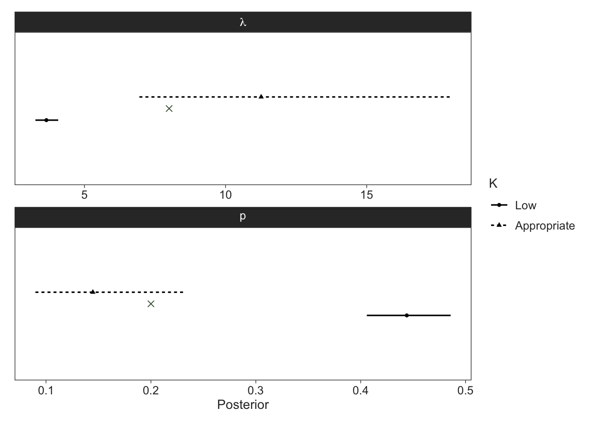
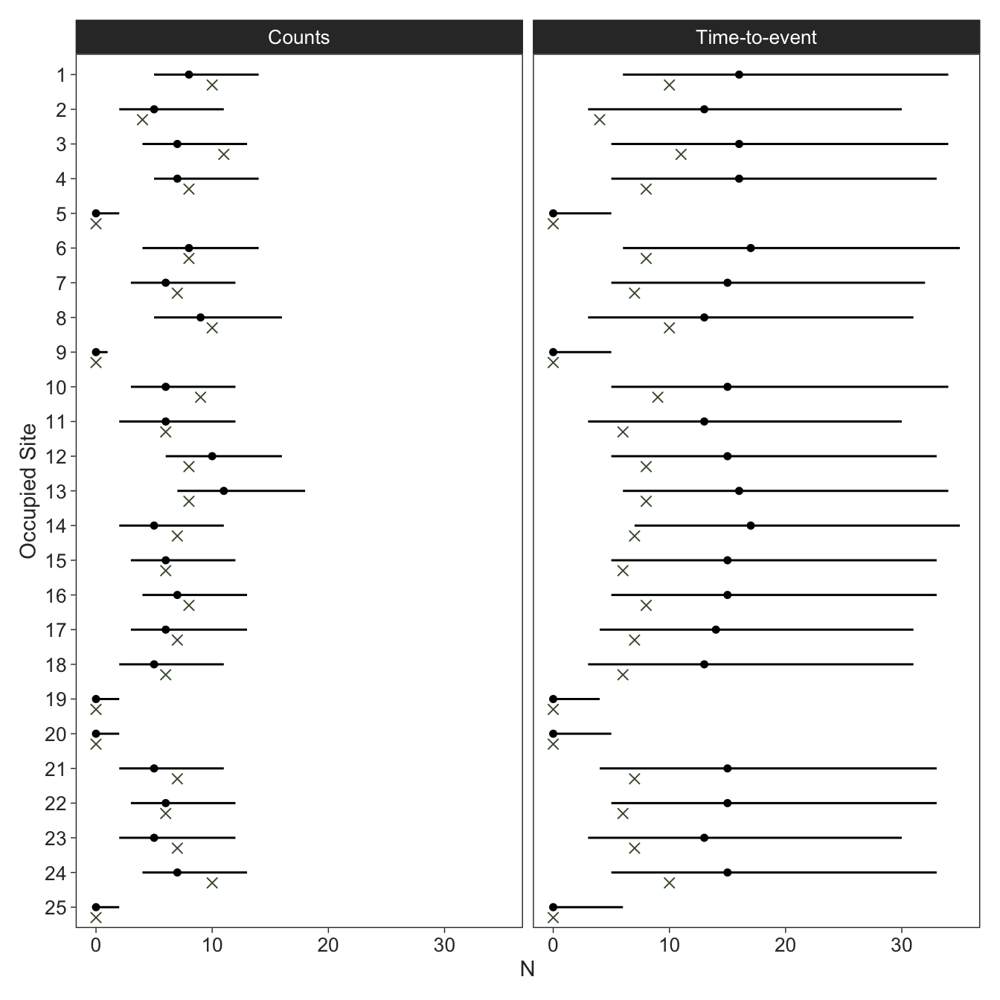

Marginalising discrete variables in ecological models
Introduction
Bayesian methods are popular for ecological modeling because of the flexibility afforded by software like JAGS, NIMBLE, and Stan. JAGS and NIMBLE are derivatives of the BUGS (Bayesian inference Using Gibbs Sampling) language and, unlike Stan, permit discrete parameters. Discrete parameters are common in conditional likelihood parameterisations of many ecological models, such as the alive state in mark-recapture, occupancy in occupancy models, and abundance in N-mixture models. All of these models can be expressed in the marginal likelihood form where the likelihood is expressed without the discrete parameters, effectively integrating over the possible values of each parameter.
When we speak about conditional likelihoods in the context of ecological models, we express the likelihood of the data \(y\) as a function of parameters \(\theta\) and (partially) hidden discrete states \(Z\), denoted \(\mathcal{L}_c(y \mid \theta, Z)\). The marginal likelihood expresses the same likelihood without the discrete states, thus marginalising them from the model, \(\mathcal{L}_m(y \mid \theta)\)
Marginalisation leads to faster estimation and, ironically, better exploration of the posterior distributions of the underlying discrete states compared to sampling them directly. The downside is that these models can be more difficult to code or understand, because the marginal likelihood parameterisations don’t reflect the data-generating process as closely as the conditional parameterisations. Ironically, all of these ecological models were first constructed in the marginalised form when frequentist methods dominated the field. Although the conditional parameterisations facilitated the on-boarding of many ecologists that were less stats-savvy (like myself), generally the marginalised forms should be preferred. And when using gradient-based MCMC methods such as the No U-Turn Sampler (NUTS) implemented in Stan, you don’t have a choice.
When I became interested in statistics during my PhD I was using JAGS and subsequently NIMBLE. I always knew I wanted to learn Stan but I found the marginalisation of discrete parameters daunting. Once I decided to bite the bullet, I quickly realised it wasn’t so hard, and it culminated in my first blog post about implementing hidden Markov models in Stan. In this post, I’ll focus on two types of popular models that are generally not constructed as hidden Markov models: occupancy and N-mixture models. I’ll show how to quickly marginalise the latent states, how to recover posterior distributions for them after estimation, and explore different parameterisations and model types.
Occupancy models
The data-generating process of an occupancy model is assumed to be as follows, where sites \(i \in 1:I\) are either occupied by a species (\(z = 1\)) or not (\(z = 0\)) determined by occupancy probability \(\psi\), and subsequently detected (\(y = 1\)) or not (\(y = 0\)) during replicate survey \(j \in 1:J_i\)1 with detection probability \(p\) (MacKenzie et al. 2002):
\[ \begin{aligned} z_i &\sim \textrm{Bernoulli} (\psi) \\ y_{ij} &\sim \textrm{Bernoulli} (z_i \cdot p) \end{aligned} \tag{1}\]
The conditional likelihood for each site’s detection history (where \(\boldsymbol{y}_i\) is the detection history of each site consisting of 1s and 0s) is expressed as follows:
\[ \mathcal{L}_c(\boldsymbol{y}_i \mid \psi, p, z_i) = \textrm{Bernoulli}(z_i \mid \psi) \cdot \prod_{j=1}^{J_i}\textrm{Bernoulli}(y_{ij} \mid z_i \cdot p) \tag{2}\]
Here, the discrete occupancy states \(z_i\) are partially unknown2 and often a quantity of interest in addition to the two parameters governing the model, \(\psi\) and \(p\).3 The marginal likelihood is expressed as follows:
\[ \begin{aligned} \mathcal{L}_m(\boldsymbol{y}_i \mid \psi, p) &= \sum_{z = 0}^1 \left[ \textrm{Bernoulli}(z \mid \psi) \cdot \prod_{j=1}^{J_i}\textrm{Bernoulli}(y_{ij} \mid z \cdot p) \right] \\ &= \textrm{Bernoulli}(0 \mid \psi) \cdot \prod_{j=1}^{J_i}\textrm{Bernoulli}(y_{ij} \mid 0 \cdot p) \\ &\quad \ + \textrm{Bernoulli}(1 \mid \psi) \cdot \prod_{j=1}^{J_i}\textrm{Bernoulli}(y_{ij} \mid 1 \cdot p) \\ \end{aligned} \tag{3}\]
which can simplified by recognising that \(z_i\) is known when any detections are made (we know the site is occupied) and that we only need to marginalise over the two states when no detections are made, because the site could still be occupied. Therefore, Equation 3 simplifies as follows, where \(Q_i = \sum_{j = 1}^{J_i} y_{ij}\):
\[ \mathcal{L}_m(\boldsymbol{y}_i \mid \psi, p) = \begin{cases} \psi \cdot \prod_{j=1}^{J_i} \textrm{Bernoulli}(y_{ij} \mid p), &Q_i > 0, \\ 1 - \psi + \psi \cdot \prod_{j=1}^{J_i} \textrm{Bernoulli}(0 \mid p), &Q_i = 0, \end{cases} \tag{4}\]
Note that the first term in the second line is just \(1 - \psi\) because \(\prod_{j=1}^{J_i}\textrm{Bernoulli}(y_{ij} \mid 0) = 0\) if any detections are made. If we assume constant detection probabilities across surveys within a site, this can be further simplified by adopting a Binomial distribution as follows:
\[ \mathcal{L}_m(\boldsymbol{y}_i \mid \psi, p) = \begin{cases} \psi \cdot \textrm{Binomial}(Q_i \mid J_i, p), &Q_i > 0, \\ 1 - \psi + \psi \cdot \textrm{Binomial}(0 \mid J_i, p), &Q_i = 0, \end{cases} \tag{5}\]
If this isn’t making much sense yet (it didn’t to me the first few times I tried), take a look at the Stan program below. I’ll first simulate some occupancy data, where all sites have the same number of surveys.
General approach
The first approach I outline follows Equation 4 and computes the site-level log-likelihood in a for-loop. A few things to note about this and some upcoming programs:
- I’m using mostly flat or weakly informative priors.
- When marginalising out discrete parameters, since we’re summing over the mutually exclusive probabilities, we have to keep track of our normalising constants. Therefore, we need to use the
_lpmfinstead of the_lupmfdistributions. This doesn’t make a difference for the Bernoulli distribution because it doesn’t have constant terms, but it does for other examples. - Although I’ve just simulated data with fixed occupancy and detection probabilities, these models facilitate site-level effects on occupancy and site-by-occasion effects on detection. Therefore, in the
modelblock, I created a vector of occupancy probabilities and a matrix of detection probabilities (using the “intercepts”psi_aandp_a) to guide practitioners using this as a template for their own models. - In the
modelblock, since we specify a log probability density in Stan, I pre-compute \(\log(\psi)\) and \(\log(1 - \psi)\), as this vectorised operation is more efficient than doing it for each site in the for-loop. - In the same vein, summing probabilities on the second line of Equation 3 equates to using the
log_sum_exp()function in Stan when working with log probabilities. - In the
generated quantitiesblock, I recover the latent occupancy states that most likely generated the data. I initialise an array of ones (all sites occupied), but then for sites without detections I sort the log probabilities associated with each occupancy state and extract the most likely one, subtracting 1 from the index to yield 0s and 1s.
Code
data {
int<lower=1> I, J_max; // number of sites and maximum surveys
array[I] int<lower=1, upper=J_max> J; // number of surveys
array[I, J_max] int<lower=0, upper=1> y; // detection history
}
transformed data {
array[I] int Q; // number of detections
for (i in 1:I) {
Q[i] = sum(y[i, 1:J[i]]);
}
}
parameters {
real<lower=0, upper=1> psi_a, p_a;
}
model {
// priors
target += beta_lupdf(psi_a | 1, 1);
target += beta_lupdf(p_a | 1, 1);
// site-level occupancy and site-by-occasion level detection
vector[I] psi = rep_vector(psi_a, I);
matrix[I, J_max] p = rep_matrix(p_a, I, J_max);
// log-transform occupancy probabilities
vector[I] log_psi = log(psi), log1m_psi = log1m(psi);
// likelihood
for (i in 1:I) {
if (Q[i]) {
target += log_psi[i] + bernoulli_lpmf(y[i, 1:J[i]] | p[i, 1:J[i]]);
} else {
target += log_sum_exp(log1m_psi[i],
log_psi[i] + bernoulli_lpmf(y[i, 1:J[i]] | p[i, 1:J[i]]));
}
}
}
generated quantities {
vector[I] log_lik;
array[I] int z = ones_int_array(I);
{
vector[I] psi = rep_vector(psi_a, I);
matrix[I, J_max] p = rep_matrix(p_a, I, J_max);
vector[I] log_psi = log(psi), log1m_psi = log1m(psi);
row_vector[2] lp;
for (i in 1:I) {
if (Q[i]) {
log_lik[i] = log_psi[i] + bernoulli_lpmf(y[i, 1:J[i]] | p[i, 1:J[i]]);
} else {
lp = [ log1m_psi[i],
log_psi[i] + bernoulli_lpmf(y[i, 1:J[i]] | p[i, 1:J[i]]) ];
log_lik[i] = log_sum_exp(lp);
z[i] = sort_indices_desc(lp)[1] - 1;
}
}
}
}Let’s run the model using cmdstanr (Gabry et al. 2024). This samples well and fast, so we’ll run many iterations to compare speed.
Code
Running MCMC with 8 parallel chains...
Chain 1 finished in 2.4 seconds.
Chain 2 finished in 2.5 seconds.
Chain 3 finished in 2.5 seconds.
Chain 4 finished in 2.4 seconds.
Chain 5 finished in 2.5 seconds.
Chain 8 finished in 2.5 seconds.
Chain 6 finished in 2.7 seconds.
Chain 7 finished in 2.8 seconds.
All 8 chains finished successfully.
Mean chain execution time: 2.5 seconds.
Total execution time: 2.9 seconds.Code
# A tibble: 2 × 8
variable median q5 q95 rhat ess_bulk ess_tail truth
<chr> <dbl> <dbl> <dbl> <dbl> <dbl> <dbl> <dbl>
1 psi_a 0.656 0.520 0.834 1.00 25715. 21924. 0.6
2 p_a 0.346 0.260 0.436 1.00 23358. 28993. 0.4
Computed from 80000 by 100 log-likelihood matrix.
Estimate SE
elpd_loo -158.8 10.4
p_loo 1.9 0.2
looic 317.6 20.8
------
MCSE of elpd_loo is 0.0.
MCSE and ESS estimates assume MCMC draws (r_eff in [0.3, 0.8]).
All Pareto k estimates are good (k < 0.7).
See help('pareto-k-diagnostic') for details.We can also check the proportion of sites that had the latent occupancy estimated correctly. Not too bad.
Multinomial likelihood
There’s quicker ways to fit the same model, specifically with this intercepts-only model with the same number of surveys per site. This uses the multinomial likelihood by specifying cell probabilities for the possible detection histories, for which I’ll show the Stan program below. This approach leverages the definition that the number of surveys with detections follows a \(\textrm{Binomial}(J, p)\) distribution and that sites have a finite number of possible detection histories.4 We can use the multinomial_logit_lupmf function to increment the log density after normalising the cell probabilities on the log scale.5
Code
data {
int<lower=1> I, J; // number of sites and surveys
array[I, J] int<lower=0, upper=1> y; // detection history
}
transformed data {
array[I] int Q; // number of detections
for (i in 1:I) {
Q[i] = sum(y[i]);
}
int K = J + 1; // number of possible detection histories
array[K] int P = zeros_int_array(K); // category counts
for (i in 1:I) {
P[Q[i] + 1] += 1;
}
}
parameters {
real<lower=0, upper=1> psi_a, p_a;
}
model {
// priors
target += beta_lupdf(psi_a | 1, 1);
target += beta_lupdf(p_a | 1, 1);
// log probabilities with detections
vector[K] lp = rep_vector(log(psi_a), K);
for (k in 1:K) {
lp[k] += binomial_lpmf(k - 1 | J, p_a);
}
// log probability without detections
lp[1] = log_sum_exp(log1m(psi_a), lp[1]);
// increment target
target += multinomial_logit_lupmf(P | lp - log_sum_exp(lp));
}
generated quantities {
vector[I] log_lik;
array[I] int z = ones_int_array(I);
{
real log_psi = log(psi_a), log1m_psi = log1m(psi_a);
row_vector[2] lp;
for (i in 1:I) {
if (Q[i]) {
log_lik[i] = log_psi + bernoulli_lpmf(y[i] | p_a);
} else {
lp = [ log1m_psi, log_psi + bernoulli_lpmf(y[i] | p_a) ];
log_lik[i] = log_sum_exp(lp);
z[i] = sort_indices_desc(lp)[1] - 1;
}
}
}
}This runs even faster and of course recovers the same posterior. We still need the same computations as the first model in the generated quantities block if we want the site-level log-likelihood values and latent states.
Code
Running MCMC with 8 parallel chains...Chain 1 finished in 0.6 seconds.
Chain 2 finished in 0.6 seconds.
Chain 3 finished in 0.6 seconds.
Chain 4 finished in 0.6 seconds.
Chain 5 finished in 0.6 seconds.
Chain 6 finished in 0.6 seconds.
Chain 7 finished in 0.6 seconds.
Chain 8 finished in 0.6 seconds.
All 8 chains finished successfully.
Mean chain execution time: 0.6 seconds.
Total execution time: 0.9 seconds. elpd_diff se_diff
model1 0.0 0.0
model2 0.0 0.0 The approaches outlined so far works well for single season occupancy. For any flavour of multi-season (dynamic) occupancy models, you’re much better off implementing the scaleable forward algorithm I describe in detail in my first post.
N-mixture models
N-mixture models are a popular class of models to estimate species abundance \(N\) while accounting for imperfect detection (Royle 2004). The data-generating process of the model is as follows, where the abundance at sites \(i \in 1:I\) assumes some non-negative discrete distribution (e.g., Poisson with expected abundance \(\lambda\)) and the observed counts of individuals \(y\) during surveys \(j \in 1:J_i\) follow a Binomial distribution where the number of trials is the latent population size and the success probability is the per-individual detection probability:
\[ \begin{aligned} N_i &\sim \textrm{Poisson}(\lambda) \\ y_{ij} &\sim \textrm{Binomial}(N_i, p) \end{aligned} \tag{6}\]
The conditional likelihood of each site given its detection history of counts \(\boldsymbol{y}_i\) is:
\[ \begin{aligned} \mathcal{L}_c(\boldsymbol{y}_i \mid \lambda, p, N_i) = \textrm{Poisson}(N_i \mid \lambda) \cdot \prod_{j=1}^{J_i} \textrm{Binomial}(y_{ij} \mid N_i, p) \end{aligned} \tag{7}\]
Unlike the occupancy example where we have just two possibilities to sum over (and only for sites without detections), in N-mixture models we have to marginalise over lots of values (the possible population sizes). We know for certain that the population sizes are \(N_i \geq \max(y_i)\), but we don’t know how large the population can be. In practice, we set a maximum population size \(K\) to marginalise over to ease computational burden. \(K\) should be large enough to exceed the maximum plausible population size but not much larger than that. Often, ecologists are dealing with populations that aren’t huge so it shouldn’t be a problem. In the case of very large population sizes, a normal approximation to the Poisson might be appropriate, which completely negates the need to marginalise when we treat the latent population size as continuous instead of discrete:
\[ \begin{aligned} N_i &\sim \textrm{Normal}(\lambda, \lambda) \\ y_{ij} &\sim \textrm{Normal}(N_i \cdot p, \sqrt{N_i \cdot p \cdot (1 - p)}) \end{aligned} \tag{8}\]
However, we are here to marginalise. Just like in the occupancy example, we need to sum the probabilities associated with each population size in \(\max(y_i):K\) given that these probabilities are mutually exclusive, yielding the following marginal likelihood for each site:
\[ \mathcal{L}_m(\boldsymbol{y}_i \mid \lambda, p) = \sum_{k = \max(y_i)}^K \left[ \textrm{Poisson}(k \mid \lambda) \cdot \prod_{j=1}^{J_i} \textrm{Binomial}(y_{ij} \mid k, p) \right] \tag{9}\]
Below is a Stan program for the marginalised N-mixture model after some data simulation. As in the occupancy model, I set up the code ready to use with site-level effects on expected abundance and site-by-survey effects on detection probabilities. In order to retrieve the latent population sizes, we first normalise the log probabilities associated with each of the possible population sizes and then sample from them using a categorical distribution.6
In this program we define ks in transformed data to be the number of population sizes to marginalise over for each site.
Code
data {
int<lower=1> I, J_max, K; // number of sites and maximum surveys and population size
array[I] int<lower=1, upper=J_max> J; // number of surveys
array[I, J_max] int<lower=0> y; // detection history
}
transformed data {
array[I] int max_y, ks; // maximum counts and number of population sizes
for (i in 1:I) {
max_y[i] = max(y[i, 1:J[i]]);
ks[i] = K - max_y[i] + 1;
}
}
parameters {
real<lower=0> lambda_a;
real<lower=0, upper=1> p_a;
}
model {
// priors
target += exponential_lupdf(lambda_a | 0.01);
target += beta_lupdf(p_a | 1, 1);
// site-level expected abundance and site-by-occasion level detection
vector[I] lambda = rep_vector(lambda_a, I);
matrix[I, J_max] p = rep_matrix(p_a, I, J_max);
// likelihood
for (i in 1:I) {
vector[ks[i]] lp;
for (k in max_y[i]:K) {
lp[k - max_y[i] + 1] = poisson_lpmf(k | lambda[i])
+ binomial_lpmf(y[i, 1:J[i]] | k, p[i, 1:J[i]]);
}
target += log_sum_exp(lp);
}
}
generated quantities {
vector[I] log_lik;
array[I] int N;
{
vector[I] lambda = rep_vector(lambda_a, I);
matrix[I, J_max] p = rep_matrix(p_a, I, J_max);
for (i in 1:I) {
vector[ks[i]] lp;
for (k in max_y[i]:K) {
lp[k - max_y[i] + 1] = poisson_lpmf(k | lambda[i])
+ binomial_lpmf(y[i, 1:J[i]] | k, p[i, 1:J[i]]);
}
log_lik[i] = log_sum_exp(lp);
N[i] = categorical_logit_rng(lp - log_lik[i]) + max_y[i] - 1;
}
}
}Let’s try this model with setting \(K\) to be intentionally small at first. We won’t look at our estimates for \(\lambda\) and \(p\) but instead check out the posterior distributions of some latent population sizes alongside the truth (red crosses).
Code
Running MCMC with 8 parallel chains...
Chain 1 finished in 1.1 seconds.
Chain 2 finished in 1.2 seconds.
Chain 5 finished in 1.1 seconds.
Chain 3 finished in 1.2 seconds.
Chain 4 finished in 1.3 seconds.
Chain 6 finished in 1.2 seconds.
Chain 7 finished in 1.2 seconds.
Chain 8 finished in 1.2 seconds.
All 8 chains finished successfully.
Mean chain execution time: 1.2 seconds.
Total execution time: 1.4 seconds.We see that the estimated abundance of several sites is pushed right up to \(K\) which we set to the maximum count. This is an extreme example, but it illustrates the point that you can tell graphically when \(K\) is too small as some posteriors will pile up at \(K\).
Code
fit_nmix |>
spread_rvars(N[i]) |>
left_join(tibble(i = 1:I, truth = N), by = "i") |>
filter(i <= 25) |>
ggplot(aes(x = truth, xdist = N, y = factor(i) |> fct_rev())) +
geom_vline(xintercept = data_nmix$K, colour = "red4", linetype = "dashed") +
stat_pointinterval(point_interval = median_qi, .width = 0.9, size = 0.5, linewidth = 0.5) +
geom_point(position = position_nudge(y = -0.3), colour = "red4", shape = "cross") +
labs(x = expression(N),
y = "Site")Let’s try it again with a more reasonable value for \(K\). We can now clearly see that all of the posteriors are well away from \(K\), indicating \(K\) was large enough for the approximation. The model does run much slower, highlighting the trade-off between a reasonable approximation and computational cost.
Code
Running MCMC with 8 parallel chains...
Chain 2 finished in 31.9 seconds.
Chain 5 finished in 33.1 seconds.
Chain 8 finished in 33.2 seconds.
Chain 7 finished in 34.5 seconds.
Chain 3 finished in 35.1 seconds.
Chain 1 finished in 35.2 seconds.
Chain 6 finished in 35.1 seconds.
Chain 4 finished in 38.0 seconds.
All 8 chains finished successfully.
Mean chain execution time: 34.5 seconds.
Total execution time: 38.2 seconds.Code
fit_nmix2 |>
spread_rvars(N[i]) |>
left_join(tibble(i = 1:I, truth = N), by = "i") |>
filter(i <= 25) |>
ggplot(aes(x = truth, xdist = N, y = factor(i) |> fct_rev())) +
geom_vline(xintercept = data_nmix$K, colour = "red4", linetype = "dashed") +
stat_pointinterval(point_interval = median_qi, .width = 0.9, size = 0.5, linewidth = 0.5) +
geom_point(position = position_nudge(y = -0.3), colour = "red4", shape = "cross") +
labs(x = expression(N),
y = "Site")
Unsurprisingly, our estimates for \(\lambda\) and \(p\) were severely biased when \(K\) is too small as indicated in the plot below, where the red crosses indicate the true values.
Code
map(list(fit_nmix, fit_nmix2),
~(.x |>
gather_rvars(lambda_a, p_a))) |>
list_rbind(names_to = "model") |>
mutate(model = factor(model, labels = c("Low", "Appropriate"))) |>
ggplot(aes(xdist = .value)) +
facet_wrap(~ factor(.variable,
labels = c("lambda", "p")),
scales = "free",
labeller = label_parsed,
ncol = 1) +
stat_pointinterval(aes(linetype = model, shape = model),
position = position_dodge(width = 0.2),
point_interval = median_qi, .width = 0.9, size = 1, linewidth = 1) +
geom_point(data = tibble(.variable = c("lambda_a", "p_a"),
.value = c(lambda, p)),
aes(x = .value, y = 0),
colour = "red4", size = 2, shape = "cross") +
ggeasy::easy_remove_y_axis() +
labs(x = "Posterior",
linetype = "K",
shape = "K")
Combining occupancy and abundance
What if we’re counting individuals at sites but not all sites are occupied? This can be described by the following generative model, which is essentially an N-mixture model nested in an occupancy model or a zero-inflated N-mixture model:
\[ \begin{aligned} z_i &\sim \textrm{Bernoulli} (\psi) \\ N_i &\sim \textrm{Poisson}(z_i \cdot \lambda) \\ y_{ij} &\sim \textrm{Binomial}(N_i, p) \end{aligned} \tag{10}\]
The conditional likelihood for the site-level vector of counts \(\boldsymbol{y}_i\) is:
\[ \mathcal{L}_c(\boldsymbol{y}_i \mid \psi, \lambda, p, z_i, N_i) = \textrm{Bernoulli}(z_i \mid \psi) \cdot \textrm{Poisson}(N_i \mid z_i \cdot \lambda) \cdot \prod_{j=1}^{J_i} \textrm{Binomial}(y_{ij} \mid N_i, p) \tag{11}\]
The full marginal likelihood is unwieldy to write, but if we define the expression in Equation 9 as \(\theta\), then the marginal likelihood can be written analogously to our starting occupancy model in Equation 4 as follows:
\[ \mathcal{L}_m(\boldsymbol{y}_i \mid \psi, \lambda, p) = \begin{cases} \psi \cdot \theta, &Q_i > 0, \\ 1 - \psi + \psi \cdot \theta, &Q_i = 0, \end{cases} \tag{12}\]
where \(Q_i\) is the total number of individuals detected across surveys. When marginalising discrete parameters in several hierarchical levels, you should first compute the lower levels (abundance in this case) and then increment the higher levels (occupancy). Let’s simulate some data to start.
Notice that in the generated quantities block, we first simulate posterior draws for \(N_i\) for all sites, but then overwrite this value with 0 if the site is estimated to have not been occupied (\(z_i = 0\)). This is akin to the forward-backward (Viterbi) algorithm for recovering hidden states in hidden Markov models.
Code
data {
int<lower=0> I, J_max, K; // number of sites and maximum surveys and population size
array[I] int<lower=1, upper=J_max> J; // number of surveys
array[I, J_max] int<lower=0> y; // detection history
}
transformed data {
array[I] int max_y, ks; // maximum counts and number of population sizes
for (i in 1:I) {
max_y[i] = max(y[i, 1:J[i]]);
ks[i] = K - max_y[i] + 1;
}
}
parameters {
real<lower=0, upper=1> psi_a, p_a;
real<lower=0> lambda_a;
}
model {
// priors
target += beta_lupdf(psi_a | 1, 1);
target += exponential_lupdf(lambda_a | 0.01);
target += beta_lupdf(p_a | 1, 1);
// site-level expected counts and site-by-occasion level detection
vector[I] psi = rep_vector(psi_a, I);
vector[I] lambda = rep_vector(lambda_a, I);
matrix[I, J_max] p = rep_matrix(p_a, I, J_max);
// log-transform occupancy probabilities
vector[I] log_psi = log(psi), log1m_psi = log1m(psi);
// likelihood
real theta;
for (i in 1:I) {
// abundance
vector[ks[i]] lp;
for (k in max_y[i]:K) {
lp[k - max_y[i] + 1] = poisson_lpmf(k | lambda[i])
+ binomial_lpmf(y[i, 1:J[i]] | k, p[i, 1:J[i]]);
}
theta = log_sum_exp(lp);
// increment occupancy
if (max_y[i]) {
target += log_psi[i] + theta;
} else {
target += log_sum_exp(log1m_psi[i], log_psi[i] + theta);
}
}
}
generated quantities {
vector[I] log_lik;
array[I] int z = ones_int_array(I), N;
{
vector[I] psi = rep_vector(psi_a, I);
vector[I] lambda = rep_vector(lambda_a, I);
matrix[I, J_max] p = rep_matrix(p_a, I, J_max);
vector[I] log_psi = log(psi), log1m_psi = log1m(psi);
real theta;
row_vector[2] lp_z;
for (i in 1:I) {
vector[ks[i]] lp;
for (k in max_y[i]:K) {
lp[k - max_y[i] + 1] = poisson_lpmf(k | lambda[i])
+ binomial_lpmf(y[i, 1:J[i]] | k, p[i, 1:J[i]]);
}
theta = log_sum_exp(lp);
N[i] = categorical_logit_rng(lp - theta) + max_y[i] - 1;
if (max_y[i]) {
log_lik[i] = log_psi[i] + theta;
} else {
lp_z = [ log1m_psi[i], log_psi[i] + theta ];
log_lik[i] = log_sum_exp(lp_z);
z[i] = sort_indices_desc(lp_z)[1] - 1;
if (!z[i]) {
N[i] = 0;
}
}
}
}
}After running this model we see estimation went well and latent occupancy states had great recovery. There’s a lot to be said for using counts in the observation models of occupancy models as it provides much more information about \(\psi\) than a Binomial likelihood, because collapsing counts to 1s and 0s always discards information. But this might be the subject of a future blog post.
Code
Running MCMC with 8 parallel chains...
Chain 7 finished in 67.5 seconds.
Chain 8 finished in 70.0 seconds.
Chain 1 finished in 71.0 seconds.
Chain 4 finished in 76.8 seconds.
Chain 5 finished in 84.9 seconds.
Chain 6 finished in 85.9 seconds.
Chain 3 finished in 86.7 seconds.
Chain 2 finished in 94.5 seconds.
All 8 chains finished successfully.
Mean chain execution time: 79.7 seconds.
Total execution time: 94.6 seconds.Code
# A tibble: 3 × 8
variable median q5 q95 rhat ess_bulk ess_tail truth
<chr> <dbl> <dbl> <dbl> <dbl> <dbl> <dbl> <dbl>
1 psi_a 0.825 0.758 0.884 1.00 1521. 1566. 0.8
2 lambda_a 19.6 12.5 41.6 1.01 934. 1002. 20
3 p_a 0.199 0.0937 0.311 1.01 918. 997. 0.2[1] 1Time-to-event N-mixture model
The final model I’ll consider is a type of continuous time model.7 Time-to-event N-mixture models can be used to estimate abundance under the assumption that detection rates are proportional to abundance (Strebel et al. 2021). Consider sites \(i \in 1:I\) surveyed \(j \in 1:J_i\) times for a minimum of length of \(\Delta_{ij}\) (e.g., 30 minutes).8 Surveys are conducted up to \(\Delta_{ij}\) or are terminated after the time of first detection, yielding right-censored data \(y_{ij} = \Delta_{ij}\) if no detection were made or \(y_{ij} < \Delta_{ij}\) if a detection was made. The waiting times are then modeled with some appropriate distribution such as the exponential. We can just replace the observation model in the zero-inflated N-mixture model in Equation 10 by modeling the waiting times as a function of the product of the per-individual detection rate \(\mu\) and site-level abundance \(N_i\), yielding the following data-generating process:
\[ \begin{aligned} z_i &\sim \textrm{Bernoulli} (\psi) \\ N_i &\sim \textrm{Poisson}(z_i \cdot \lambda) \\ y_{ij} &\sim \min(\textrm{Exponential}(N_i \cdot \mu), \Delta_{ij}) \end{aligned} \tag{13}\]
Just out of curiosity, I’m going to use the same parameters as for first zero-inflated N-mixture model above, leveraging the fact that \(\mu = -\log(1 - p)\).9 Since I’m trying to compare these models, I’ll assume that \(\Delta = 1\) for all surveys, but this doesn’t have to be case for these models.
The Stan program uses the log density function exponential_lpdf when detections were made (y[i, j] < Delta[i, j]), and the complement of the cumulative density function exponential_lccdf if no detections were made. The latter gives the log probability of not making any detections during the survey of length \(\Delta_{ij}\). Therefore, we can’t vectorise over the surveys because the density function depends on whether or not there was a detection in each survey.
Code
data {
int<lower=0> I, J_max, K, Delta_max; // number of sites and maximum surveys, population size, and survey length
array[I] int<lower=1, upper=J_max> J; // number of surveys
matrix<lower=0>[I, J_max] Delta, y; // survey lengths and detection history
}
transformed data {
array[I, J_max] int Q; // indicator for detection
array[I] int Q_sum = zeros_int_array(I); // number of detections
for (i in 1:I) {
for (j in 1:J[i]) {
Q[i, j] = y[i, j] < Delta[i, j];
}
Q_sum[i] = sum(Q[i, 1:J[i]]);
}
}
parameters {
real<lower=0, upper=1> psi_a;
real<lower=0> lambda_a, mu_a;
}
model {
// priors
target += beta_lupdf(psi_a | 1, 1);
target += exponential_lupdf(lambda_a | 0.01);
target += exponential_lupdf(mu_a | 0.1);
// site-level expected counts and site-by-occasion level detection
vector[I] psi = rep_vector(psi_a, I);
vector[I] lambda = rep_vector(lambda_a, I);
matrix[I, J_max] mu = rep_matrix(mu_a, I, J_max);
// log-transform occupancy probabilities
vector[I] log_psi = log(psi), log1m_psi = log1m(psi);
// likelihood
vector[K] lp;
real theta;
for (i in 1:I) {
// abundance
for (k in 1:K) {
lp[k] = poisson_lpmf(k | lambda[i]);
for (j in 1:J[i]) {
if (Q[i, j]) {
lp[k] += exponential_lpdf(y[i, j] | k * mu[i, j]);
} else {
lp[k] += exponential_lccdf(Delta[i, j] | k * mu[i, j]);
}
}
}
theta = log_sum_exp(lp);
// increment occupancy
if (Q_sum[i]) {
target += log_psi[i] + theta;
} else {
target += log_sum_exp(log1m_psi[i], log_psi[i] + theta);
}
}
}
generated quantities {
vector[I] log_lik;
array[I] int z = ones_int_array(I), N;
{
vector[I] psi = rep_vector(psi_a, I);
vector[I] lambda = rep_vector(lambda_a, I);
matrix[I, J_max] mu = rep_matrix(mu_a, I, J_max);
vector[I] log_psi = log(psi), log1m_psi = log1m(psi);
real theta;
vector[K] lp;
row_vector[2] lp_z;
for (i in 1:I) {
for (k in 1:K) {
lp[k] = poisson_lpmf(k | lambda[i]);
for (j in 1:J[i]) {
if (Q[i, j]) {
lp[k] += exponential_lpdf(y[i, j] | k * mu[i, j]);
} else {
lp[k] += exponential_lccdf(Delta[i, j] | k * mu[i, j]);
}
}
}
theta = log_sum_exp(lp);
N[i] = categorical_logit_rng(lp - theta);
if (Q_sum[i]) {
log_lik[i] = log_psi[i] + theta;
} else {
lp_z = [ log1m_psi[i], log_psi[i] + theta ];
log_lik[i] = log_sum_exp(lp_z);
z[i] = sort_indices_desc(lp_z)[1] - 1;
if (!z[i]) {
N[i] = 0;
}
}
}
}
}Let’s fit the time-to-event model, check the posteriors, and plot a subset of the abundance estimates alongside those of the first zero-inflated N-mixture model.
Code
Running MCMC with 8 parallel chains...Chain 2 finished in 27.5 seconds.
Chain 7 finished in 30.4 seconds.
Chain 3 finished in 31.8 seconds.
Chain 5 finished in 33.4 seconds.
Chain 8 finished in 34.3 seconds.
Chain 4 finished in 34.9 seconds.
Chain 6 finished in 35.1 seconds.
Chain 1 finished in 36.0 seconds.
All 8 chains finished successfully.
Mean chain execution time: 32.9 seconds.
Total execution time: 36.1 seconds.Code
# A tibble: 3 × 8
variable median q5 q95 rhat ess_bulk ess_tail truth
<chr> <dbl> <dbl> <dbl> <dbl> <dbl> <dbl> <dbl>
1 psi_a 0.827 0.759 0.883 1.01 1429. 1181. 0.8
2 lambda_a 11.1 5.29 38.6 1.01 902. 857. 20
3 mu_a 0.393 0.106 0.884 1.01 906. 848. 0.223Code
out <- map(list(fit_zi_nmix, fit_tte),
~(spread_rvars(.x, z[i], N[i]))) |>
list_rbind(names_to = "model") |>
mutate(model = factor(model, labels = c("Counts", "Time-to-event"))) |>
left_join(tibble(i = 1:I, truth = N), by = "i")
out |>
filter(i <= 25) |>
ggplot(aes(xdist = N, y = factor(i) |> fct_rev())) +
facet_wrap(~ model) +
stat_pointinterval(point_interval = median_qi, .width = 0.9, size = 0.5, linewidth = 0.5) +
geom_point(aes(x = truth),
position = position_nudge(y = -0.3),
size = 2,
colour = "red4",
shape = "cross") +
labs(x = expression(N),
y = "Occupied Site",
colour = "Model")
The estimates for the count model look better and seemed to perform better according to RMSE of the population sizes, which makes sense because the count model can provide more information (number of individuals detected) compared to the time-to-event model (waiting time to the first individual detected). Since the \(\textrm{Binomial}(N_i, p)\) distribution converges to \(\textrm{Poisson}(N_i \cdot p)\) for sufficiently large \(N\) and sufficiently small \(p\)10, and because \(p \approx \mu\) for small values of \(p\), researchers gain statistical power by not terminating the search after first detection but instead counting the number of individuals during the interval \(\Delta_{ij}\). But of course, one of the big draws of the time-to-event model is less time in the field; you win some, you lose some.
# A tibble: 2 × 2
model RMSE
<fct> <rvar[1d]>
1 Counts 8 ± 5.9
2 Time-to-event 11 ± 5.6At least our occupancy states are still estimated well.
Thanks for reading!
References
Footnotes
The number of surveys can vary by site, which is the norm rather than the exception in ecological data.↩︎
We do know that sites with detections are occupied.↩︎
Both \(\psi\) and \(p\) can be modeled as functions of covariates or random effects at the site-level (occupancy) or the site-by-survey level (detection).↩︎
We could still formulate this with varying number of surveys, except that now the cell probabilities have to be expanded to not only account for the \(J + 1\) possible outcomes but also the variation in \(J_i\) itself.↩︎
Normalising probabilities means to divide by the sum of total probabilities, which is achieved by subtracting the
log_sum_expof the log probabilities.↩︎This is referred to as inverse transform sampling.↩︎
The traditional N-mixture model can become a continuous time model by incorporating the survey lengths into the observation model.↩︎
The survey times can vary by site and occasion.↩︎
Probabilities can be converted to rates like this more generally, such as survival probabilities as a function of instantaneous mortality hazard rates \(S = 1 - \exp(-h)\) (Ergon et al. 2018).↩︎